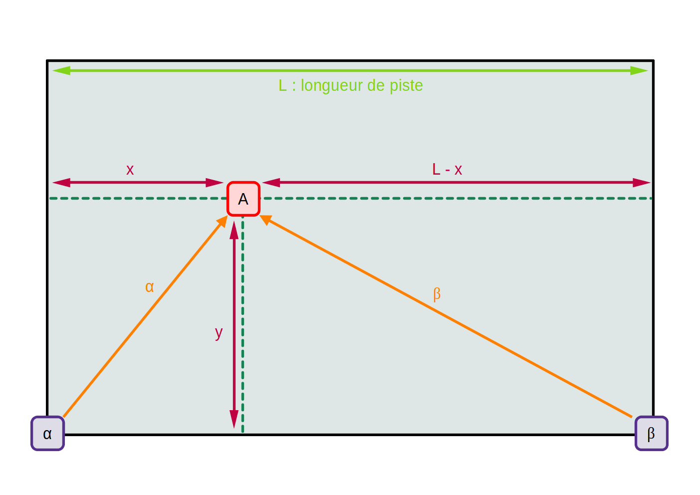
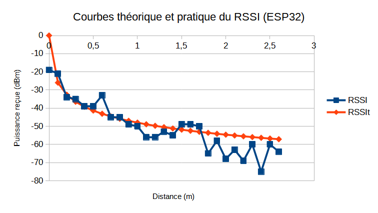
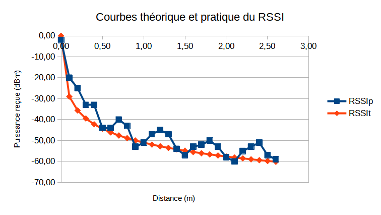

L'ESP32 peut être implémanté dans un système autonome, tel qu'un robot suiveur de ligne. Pour qu'il soit totalement autonome, il est nécessaire qu'il puisse s'avoir se situer dans l'espace. J'ai donc choisi de me
pencher sur la géolocalisation des robots suiveur de ligne.
Il existe plusieurs système de géolocalisation. Le site Rtone nous donne quelques pistes : le GPS, le BLE, l'UWB, le WPS, le réseau cellulaire et le LoRaWAN.
GPS :
Selon Wikipédia, le GPS ou Global Positionnig System est
Il existe plusieurs système de donne quelques pistes : le GPS, le BLE, l'UWB, le WPS, le réseau cellulaire et le LoRaWAN.
BLE :
Selonne quelques pistes : le GPS, le BLE, l'UWB, le WPS, le réseau cellulaire et le LoRaWAN.
WPS :
Selon BrickHouse Security, le WPS ou Wifi Positionnig System est un système de géolocalisation se basant beaucoup sur le GPS. L'appareil n'a pas besoin de se connecter aux différents réseaux Wifi, il mesure juste
la puissance des signaux reçus des émetteurs. Il est alors capable de savoir à quelle distance se trouve l'émetteur. Par un système de trilatération, l'appareil peut connaître sa position par rapport aux émetteurs.
Nous pouvons mettre en oeuvre ce système avec les ESP32.
Position sur la piste :

En utilisant Pythagore, j'ai trouvé les coordonnées du point A. Avec A(x ; y), α(0 ; 0) et β(L ; 0) comme points et L la longueur de la piste. Ce sera donc α l'origine de notre plan.
$$ {\alpha^{2} = x^{2} + y^{2} \leftrightarrow y^{2} = \alpha^{2} - x^{2}} $$ $$ {\beta^{2} = (L-x)^{2} + y^{2} = L^{2} + x^{2} - 2Lx + y^{2} = L^{2} + x^{2} - 2Lx + \alpha^{2} - x^{2} = L^{2} - 2Lx + \alpha^{2} \leftrightarrow 2Lx = L^{2} + \alpha^{2} - \beta^{2}} $$
Maintenant que nous avons ces formules pour connaître la position de A, il faut réfléchir à qui est l'émetteur et qui est le récepteur.
Tests pratique entre deux ESP 32 :
J'ai utilisé un ESP32 qui sert de serveur wifi pour émettre et un autre ESP32 qui va se connecter au wifi du premier. Ce dernier va calculer la distance via le RSSI. J'ai alors obtenu les résultats suivant :

Au début, les points sont cohérents, mais à partir de 1,7 m, les puissances pratiques sont beaucoup trop faibles comparées à la théorie. J'ai donc changé d'émetteur en remplaçant l'ESP32 par un téléphone.
Tests pratique entre un ESP 32 et un téléphone :
J'ai utilisé mon téléphone qui sert de serveur wifi via un partage de connexion pour émettre et un ESP32 qui va se connecter au wifi du premier. J'ai obtenu les résultats suivant :

Globalement, la courbe pratique suit la courbe théorique. Toutefois, il semble y avoir des rebons du côté de la pratique. Quelque fois la valeur est en dessous de celle souhaitée, d'autres fois elle est en dessus. Je pense que cela peut-être
dû au fait qu'il n'est pas possible de connaître le point d'émission et de réception des antennes. En effet, seul les antennes isotropiques peuvent émettre théoriquement dans tous les sens à la même intensité. Mais dans la plupart des cas, l'antenne
émet beaucoup plus dans une direction que d'autre. Sauf qu'il n'est pas possible pour moi de savoir ce point d'intensité maximale.
Temps alloué :
Version en date du 16/02/2025 par Théo-Félix ADAM.